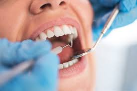
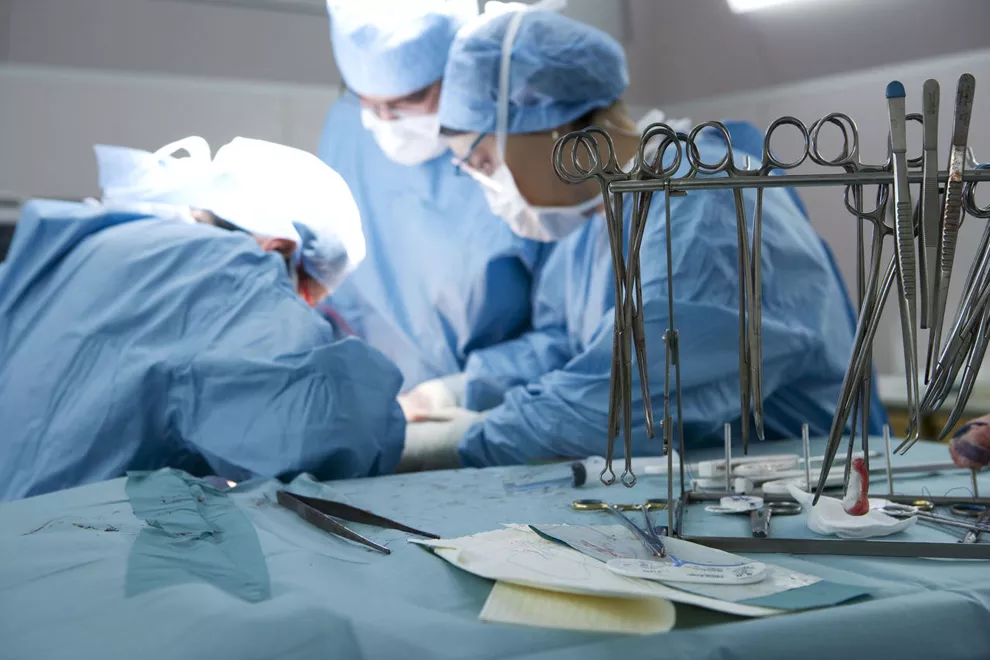
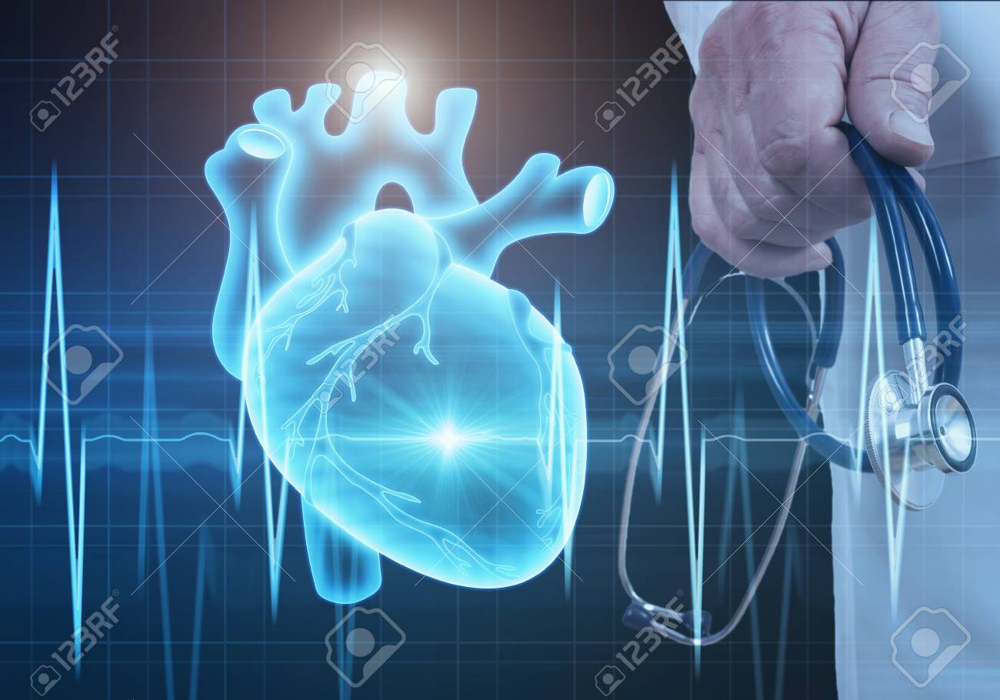
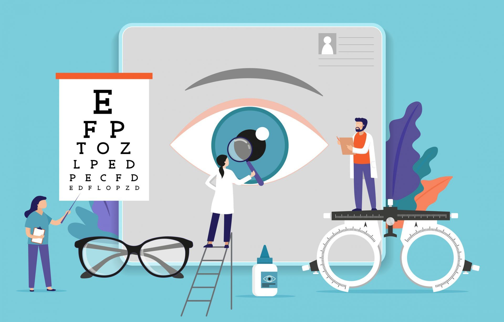

NUESTROS SERVICIOS
Odontología |
Medicina general |
Cirugía |
Psiquiatría |
|---|---|---|---|
Pediatría> 
|
Psicología
|
Cardiología |
Oftalmología |
MISIÓN
Colaborar para mejorar la salud y la calidad de vida de los ciudadanos, ofertando servicios sanitarios excelentes, con el paciente como centro de nuestra atención, y profesionales altamente cualificados. Asegurar la máxima colaboración e integración con la administración pública, con atención primaria y los servicios socio-sanitarios, promoviendo un beneficio mutuo y sostenible para toda la sociedad.
VISIÓN
Liderar la Transformación del Sistema Sanitario actual para asegurar su sostenibilidad, promoviendo la innovación e incorporando las nuevas tecnologías disponibles.